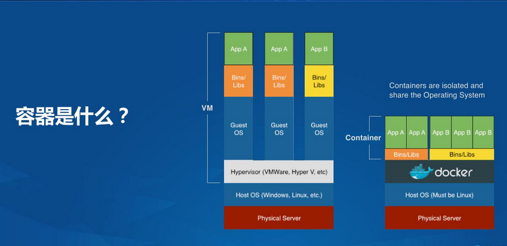

容器是什么

什么是容器技术。容器技术其实本身并不是什么崭新的技术，大家经常拿容器技术跟虚拟化技术比较。有一个通俗的说法，容器是极度轻量的虚拟机。
怎么理解大家看这个图，左边图展示的是虚拟机，物理服务器里装操作系统，再装上虚拟机管理软件，生成很多虚拟机，然后虚拟机再装操作系统再装各种各样的应用。
右边图展示的是容器，物理服务器里装操作系统，绝大多数情况下，容器基于的操作系统是Linux操作系统，然后Linux里装一个容器软件，最常见的是Docker，用Docker运行各种各样的容器，
容器里面不需要再装一次操作系统里，容器里面只装各种各样的应用就好了。这两张图对比大家看出来容器跟虚拟机比最大的优势就是轻量很多，容器里面不需要再装一遍操作系统。
容器里面的应用重用容器外面的操作系统，特别是Linux内核这些操作系统核心组件。再一点，容器是用于对应用进行封装，容器里面是各种各样的应用程序。
用容器封装应用时，会把程序本身和依赖库都打包在一起，这样容器应用具有可移植性，在不同的Linux环境下都可以运行，而不需要再安装依赖库。
容器本身的理念是非常非常简单的,容器相当于操作系统的一个进程。
Docker
Docker属于容器技术的一种。Docker有镜像的概念，Docker镜像和虚拟机镜像不一样的特点就是Docker的镜像是分层的，最下面是基础的镜像，是基础Linux环境，上面每一层镜像装不同应用。
Docker镜像分层最大的好处就是应用分发很方便，每次分发Docker应用的时候，只需要下载更新部分的镜像，而不用重新下载整个镜像，实现应用增量分发更新。
Docker的优点：
更高效的利用系统资源
由于容器不需要进行硬件虚拟以及运行完整操作系统等额外开销，Docker 对系统资源的利用率更高。
更快速的启动时间
传统的虚拟机技术启动应用服务往往需要数分钟，而 Docker 容器应用，由于直接运行于宿主内核，无需启动完整的操作系统，因此可以做到秒级、甚至毫秒级的启动时间。大大的节约了开发、测试、部署的时间。
一致的运行环境
开发过程中一个常见的问题是环境一致性问题。由于开发环境、测试环境、生产环境不一致，导致有些 bug 并未在开发过程中被发现。而 Docker 的镜像提供了除内核外完整的运行时环境，确保了应用运行环境一致性，从而不会再出现 「这段代码在我机器上没问题啊」 这类问题。
持续交付和部署
更轻松的迁移
更轻松的维护和扩展
| 特性 | 容器 | 虚拟机 |
|---|---|---|
| 启动 | 秒级 | 分钟级 |
| 硬盘使用 | 一般为 MB | 一般为 GB |
| 性能 | 接近原生 | 弱于 |
| 系统支持量 | 单机支持上千个容器 | 一般几十个 |
容器与镜像的关系类似于面向对象编程中的对象与类。